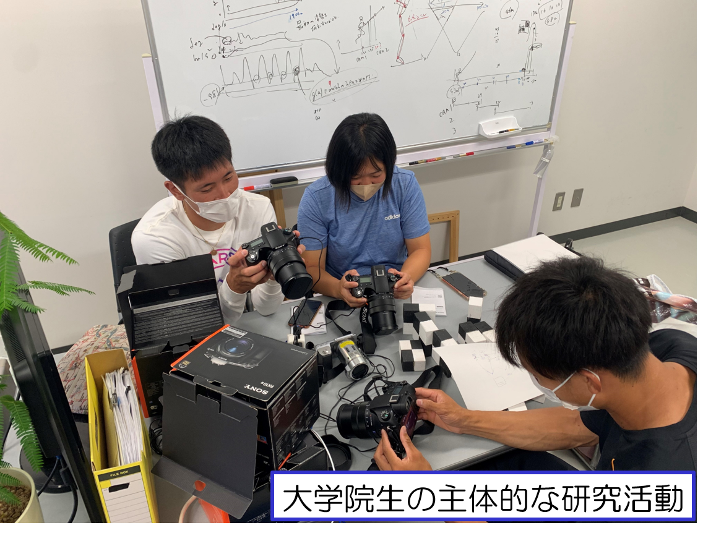

0. 記事作成の基本ルール 0. Basic rules for writing articles
- 文章は必ず <p> タグで囲む Always enclose text in <p> tags
- 日本語文はこうやって表記する→<span class="lang-ja">ここにテキストが入ります。</span> Japanese sentences are written like this:<span class="lang-ja">ここにテキストが入ります。</span>
- 英語文はこうやって表記する→<span class="lang-en">Your text goes here.</span> English sentences are written like this:<span class="lang-en">Your text goes here.</span>
- 改行だけでは段落にならない A line break alone does not make a paragraph
- 改行にはコレ→<br> For line breaks, use this:<br>
- を使うと改行できる。 You can use to start a new line.
- 画像の前後に説明文を入れる Add descriptive text before and after the image
- ファイル名に日本語を使わない（例：experiment.jpg） Do not use Japanese in file names (e.g., experiment.jpg)
よくあるミス：タグの閉じ忘れ / 画像パス間違い / Word貼付による不要装飾
Common mistakes: forgetting to close tags / wrong image path / unnecessary decoration by pasting Word
1. テキスト配置（左・中央・右） 1. Text alignment (left, center, right)
Sample
Left alignment (Default)
Center alignment
Right alignment
Code
<p style="text-align:left;">Left alignment (Default)</p>
<p style="text-align:center;">Center alignment</p>
<p style="text-align:right;">Right alignment</p>
2. テキスト装飾 2. Text Style
Sample
Resize
Bold / Italic / Underline / Centerline
明朝体（serif）
Special characters example: → , ©
Code
<p style="font-size:1.3rem;">Resize</p>
<strong>Bold</strong>
<i>Italic</i>
<u>Underline</u>
<s>Centerline</s>
<p style="font-family:serif;">明朝体</p>
→ ©
3. 画像を縦に並べる 3. Arrange images vertically
Sample

Code
<img src="img1.jpg" class="content-img">
<img src="img2.jpg" class="content-img">
4. 複数画像（横並び） 4. Multiple images (side by side)
Sample
Code
<div class="img-grid">
<img src="img1.jpg" class="content-img">
<img src="img2.jpg" class="content-img">
</div>
5. 外部リンクとボタン 5. External Links and Buttons
Sample
Code
<a href="URL" target="_blank">リンク</a>
<a href="URL" class="btn">ボタン</a>
Code
<div class="btn-right">
< a href="https://example.com"
class="btn"
target="_blank" >
資料ページへ
<i class="fas fa-external-link-alt"> </i>
</a>
</div>